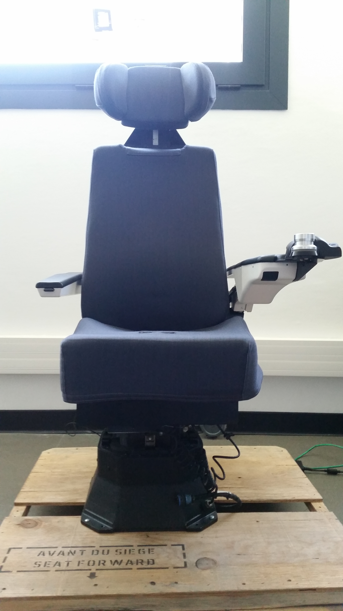

Matériel à disposition
Fichiers sons

Pour nos expériences l'entreprise Thalès nous a fournit des sons que nous avons dû modifier pour qu'ils puissent être utilisé dans nos expériences. (c.f la partie préparation de l'expérience)
Ces fichiers étaient tous de la même forme:
Ready [callsign], go to [couleur] [chiffre] now.
Le callSign étant de la forme "Baron", "Charly" etc...
Un exemple de son spatialisé
Un exemple de son final
Casque
Le casque utilisé pour nos expériences est un casque Bose A20 avec réduction active du bruit.
il nous a été mis à disposition par l'école pour notre projet.
Siège
